← Índice de los 69 tutes de IDA
Tute 27 · Solución IDA_STRUCT
▶ video afín (mismo autor, en x64dbg): «23 Ejercicio con Estructuras (con símbolos)» · se conecta con: IDA · Memoria
INTRODUCCIÓN AL REVERSING CON IDA PRO DESDE CERO PARTE 27
SOLUCIONANDO IDA_STRUCT.7z.
Solucionaremos el ejercicio que dejamos para resolver en la parte anterior llamado IDA_STRUCT.7z.
El ejecutable se llama ConsoleApplication4.exe y en la misma carpeta están los símbolos
ConsoleApplication4.pdb.
Cuando arranca y les dice que tratará de hallar los símbolos, podrán apuntar a ese archivo y cargarlos con lo cual se aclara un poco, pero yo para resolverlo, borrare o renombrare el archivo pdb así se carga sin símbolos, lo cual es lo que normalmente encontraremos, aunque es más complejo, es más real.
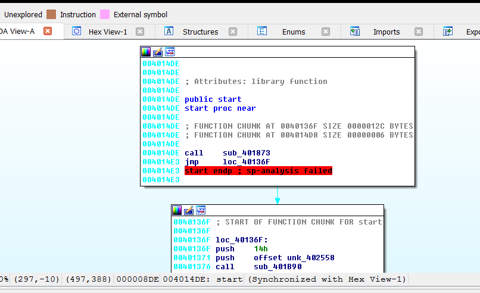
Obviamente al no tener símbolos no detectara el main, podemos llegar al mismo como es una aplicación de consola buscando los argv o argc o sino más genérico, mirando las strings.
Si lo ejecutamos alguna vez, vemos que lo primero que hace es pedirnos que ingresemos un número, allí se ven las strings lo mismo que las que parecen ser las de chico bueno y chico malo.
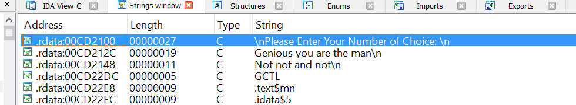
Haciendo click en la string Please enter your number….
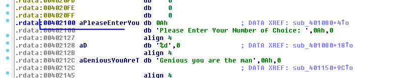
Allí vemos que tiene referencias pasando el mouse por la flechita, o apretando X en la dirección.
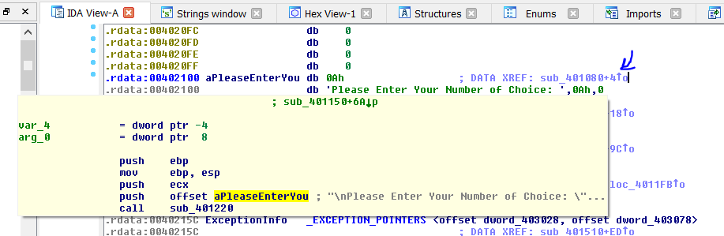
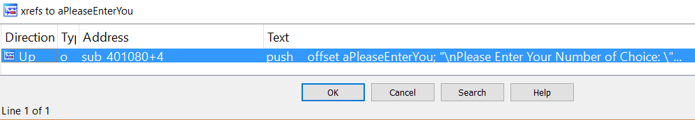
Vayamos allí.
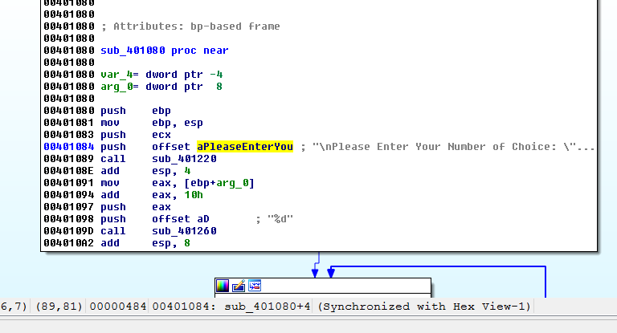
Vemos que estamos en una función, vemos la string por ahí y el llamado a imprimir la misma, como no tenemos símbolos, no nos dice que es 0x401220 es printf, si miramos dentro de la misma.
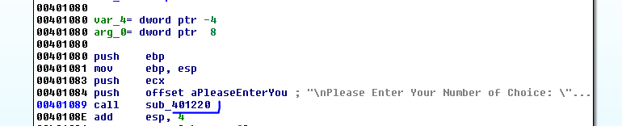
Puede uno mirar dentro y vemos que hay varias funciones.
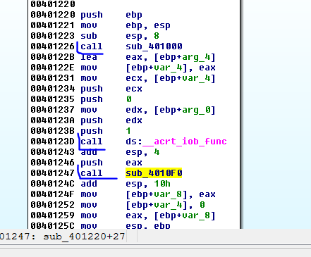
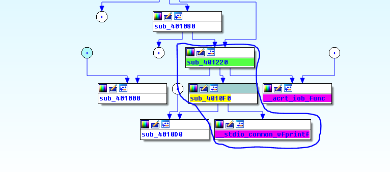
PROXIMITY VIEW.
En el proximity view que se entra apretando la tecla - y se sale apretando +, vemos que 0x401220 llama a esas mismas tres funciones, pero tanto 0x401000 como acrt_iob_func son funciones que hacen algo y vuelven, no siguen hacia otras funciones hijas.
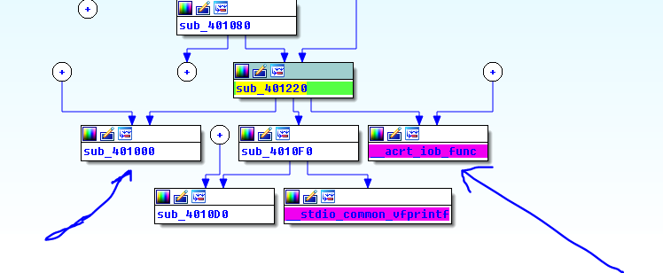
Allí donde están las flechas que agregue, se ve que no sigue hacia otras funciones, la única que sigue es 0x4010f0 que llama a dos funciones y una es vfprintf, y de allí luego vuelve, no hay más hacia abajo.
Eso se puede ver también en el listado si miro dentro de cada función voy a ver lo mismo.
Vemos que 0x401000 no sigue solo hace una pavada y vuelve.
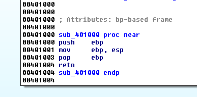
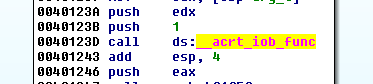
Y _acrt_iob_func es una api así que no seguirá, solo inicializará stdout para luego imprimir.
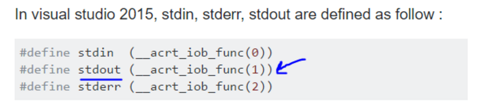
O sea que pasándole el argumento 1 como en nuestro caso, inicializará stdout.
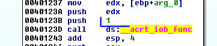
Y la tercera función que llama .
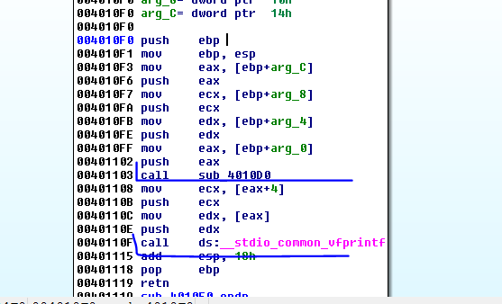
Termina llamando a vfprintf, o sea terminamos viendo lo mismo que en el proximity view pero tardamos más.
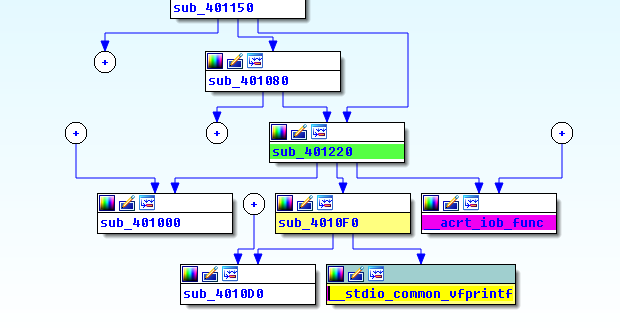
Así que renombramos 0x401220 como printf.
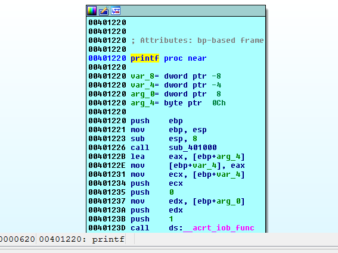
Yo las que terminan siendo una api como en este caso printf las pinto de celeste cada uno lo hará a su gusto.
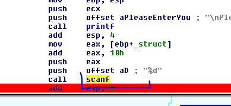
La siguiente función de 0x40109D es seguramente scanf si entramos y vemos el proximity view.
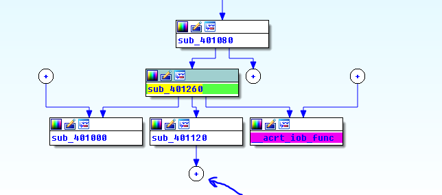
Allí sigue hago click para que se despliegue.
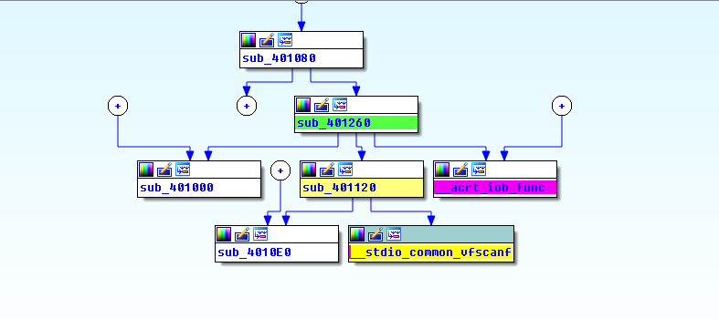
Vemos que es scanf.
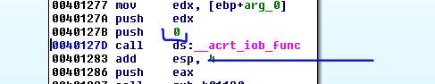
Y en este caso la función _acrt_iob_func con el argumento 0 inicializa stdin.
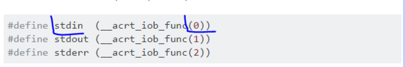
Así que renombramos a scanf.
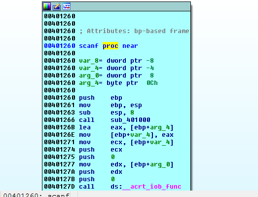
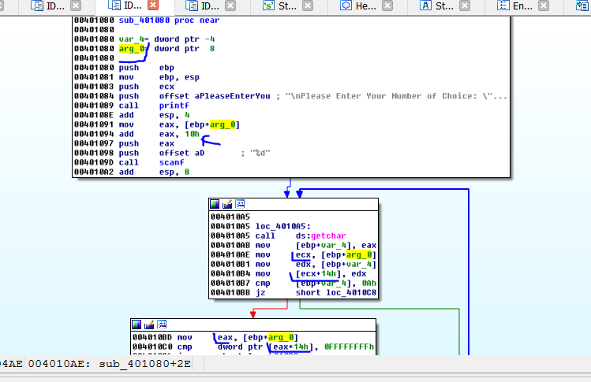
Vemos algo que es posiblemente una estructura pues cuando se pasa como argumento una dirección y luego se recupera y se le suma offsets para acceder a los campos en cada lugar que se la usa, es posiblemente la dirección de una estructura.
Veamos las referencias de esta función
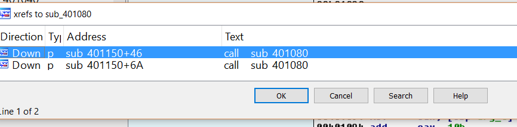
Vemos que hay dos lugares si miro allí.
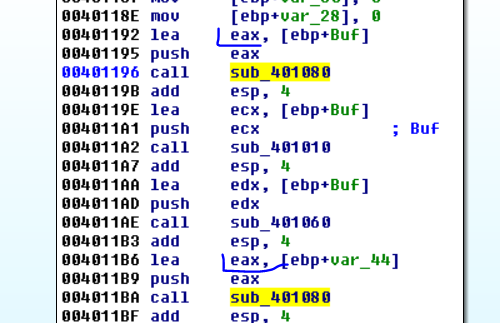
Veo que el argumento en ambos casos es una dirección, lo cual da la idea de estructuras.
Como son dos direcciones diferentes da la impresión que fueran dos estructuras del mismo tipo, comenzaremos creando una sola, sin saber el tamaño, sin saber los campos ni nada, los iremos reverseando poco a poco.
Vemos que el máximo offset que encuentro hasta ahora es 0x14, así que creare una estructura de ese largo, si llega a ser más grande la agrandaré.
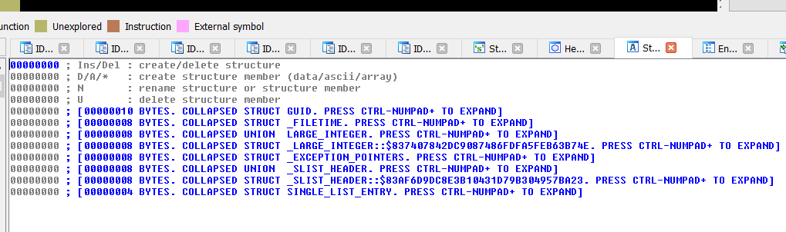
Así que voy a la pestaña structures, es una de las opciones para crearla, la otra seria ir a LOCAL TYPES y crearla como código en C, lo haremos por ahora aquí.
Es un poco molesto y poco intuitivo realmente, pero bueno cuando estamos en el lugar donde está definida podemos hacer CREATE STRUCT FROM SELECTION, normalmente la crearemos en alguna función donde no está definida sin saber nada.
Obviamente sé que si analizo la representación del stack del main podría usar CREATE STRUCT FROM SELECTION alli y se me facilitaría la vida, pero tomemos el peor caso, que estemos en una función de un programa muy grande y que estamos lejísimo de donde fue definida, así que tenemos que arreglarlos como podemos.
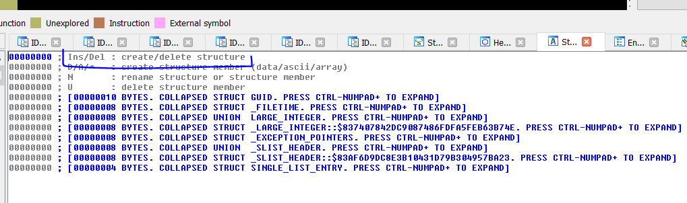
Allí vemos que para crear una estructura hay que apretar la tecla INS, lo hacemos.
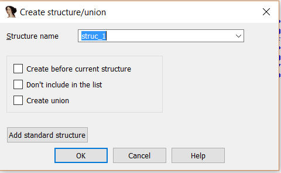
Le puedo poner el nombre que quiera, le pondré MyStruct.
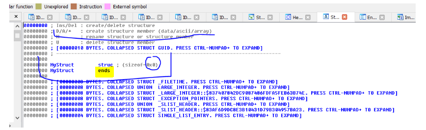
Allí se creó con size 0, ahora haré un truco para cuando aún no conozco los campos ni nada y le quiero dar un size, primero apreto D en la palabra ends, para agregar un sólo campo.
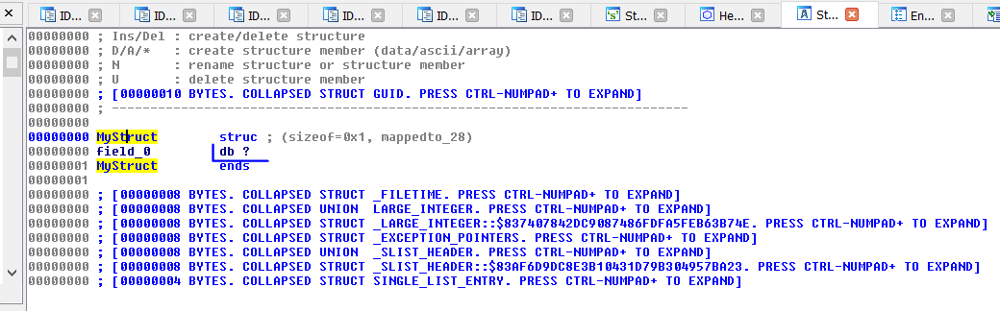
Allí le agrego un campo de 1 byte de largo DB, si volvería a apretar D cambiaria cada vez a word DW y luego a DWORD DD.
Pero aquí como no sabemos, lo dejamos así y hacemos click derecho en la estructura.
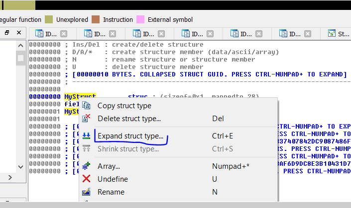
Ya que he visto un campo en 0x14.
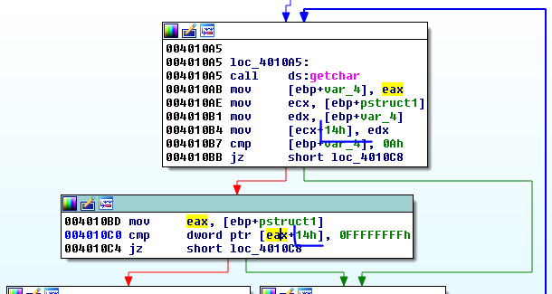
Así que como para llenarlo a ese campo con un dword, necesita 4 bytes más, la creare de 0x18, le agregare 0x17 al byte que tenía.
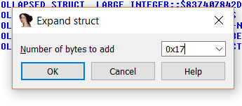
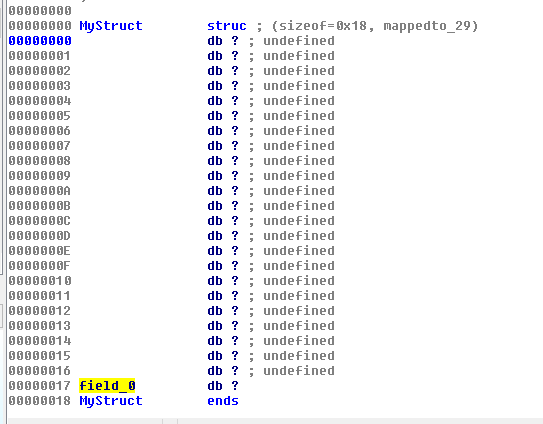
Veo que me quedo con size 0x18 por ahora lo dejaremos así, de necesitar lo agrandamos.
Como esta función es llamada dos veces, la primera con la dirección de una primera estructura tipo MyStruct que llamaremos arbitrariamente pepe y la segunda con la dirección de una segunda estructura del mismo tipo MyStruct que llamaremos juan, dentro de la función le pondremos un nombre genérico que sirva para ambos casos.
En el código fuente esto se ve así, para aclarar dos variables de tipo MyStruct una llamada pepe otra llamada juan, ambas se le pasa su dirección como argumento a las funciones.
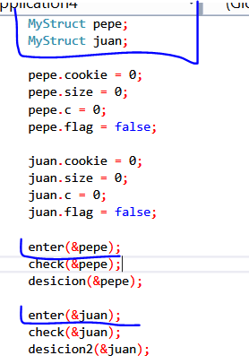
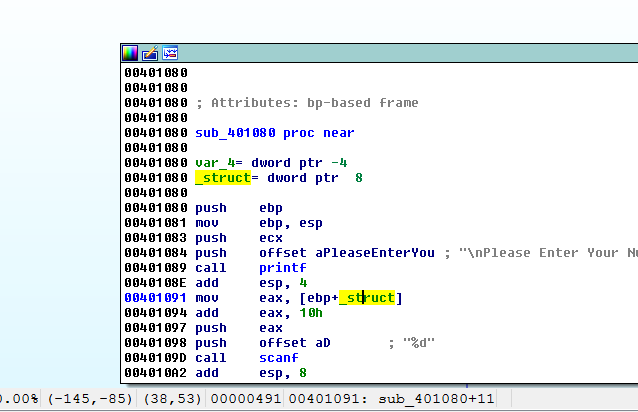
Como la misma función tendrá primero la dirección de la primera estructura o pepe en el arg0 y la segunda vez que se lo llama tendrá la dirección de la estructura juan, le pondré un nombre genérico para ambas por ejemplo _struct.
Si decompilo la función con F5 veo que no está bien
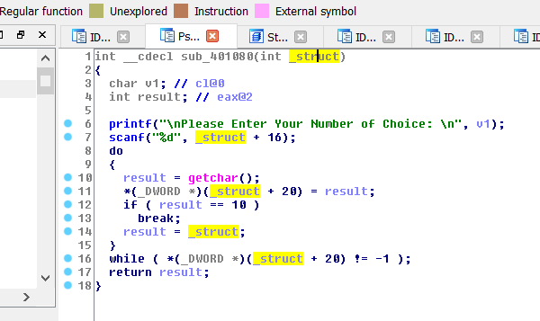
Veo que la definición de la variable es un simple int y no como en el código original como la dirección de una estructura, podré arreglarlo aquí.
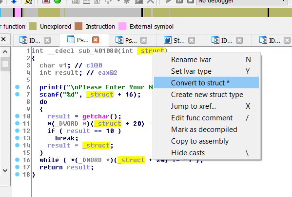
Me sale para elegir la dirección de qué estructura es y aquí elegiremos del tipo MyStruct.
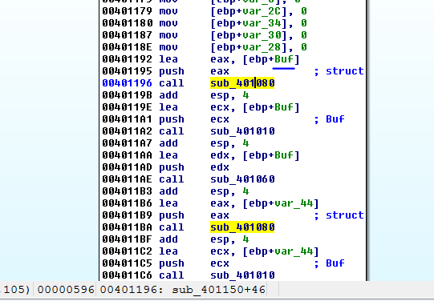
Obviamente Buf es pepe y allí obtiene su dirección y la pasa como argumento, veamos Buf en la representación del stack.
Como la estructura no es necesario crearla porque ya existe, solo tengo que decirle que Buf es del tipo MyStruct, para eso ALT mas Q en Buf.
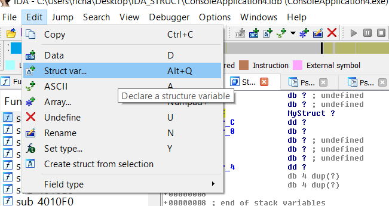
y le asignara a Buf el tipo MyStruct si pusimos de menos el tamaño quedaran afuera algunos campos pero después se podrá agrandar MyStruct y se corregirá solo aquí.(si no se rompe jeje)
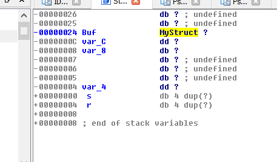
Renombramos Buf a pepe.
Vemos allí que se pasa la dirección de pepe y en la segunda llamada se pasa la dirección de var_44 que también será la otra variable juan del tipo MyStruct, así que vamos a la representación del stack y en var_44 hacemos tambien ALT + Q.
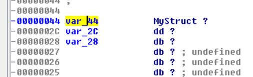
Ya tenemos las dos estructuras del tipo MyStruct.
Vuelvo a la función
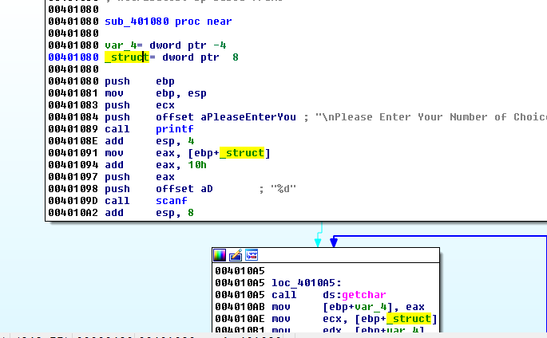
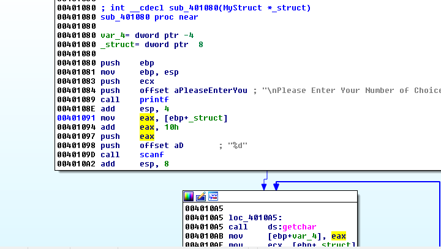
Vemos que el campo en 0x10 es un dword donde recibe el valor de scanf, así que vamos a MyStruct y en 0x10 apretamos la D hasta que quede del tipo DWORD DD.
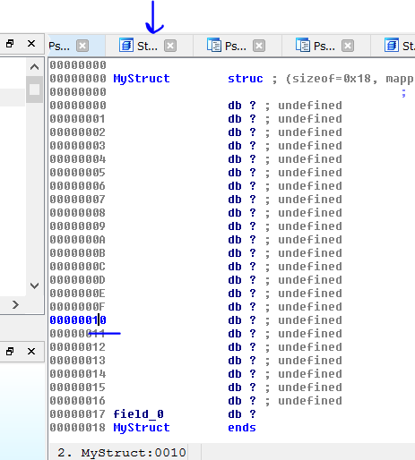
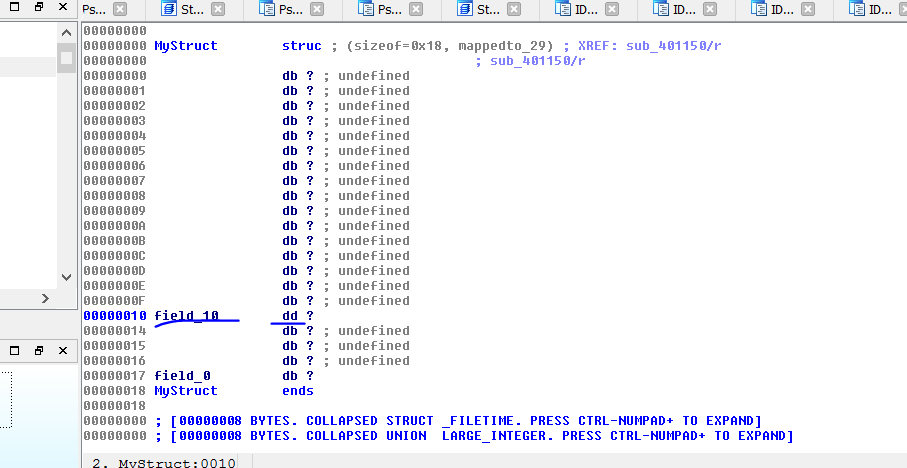
Lo renombrare a número.
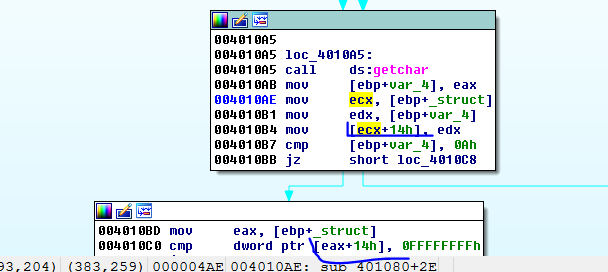
La otra entrada es el campo de 0x14 que se usa en el loop para quitar el 0A le pondré c.
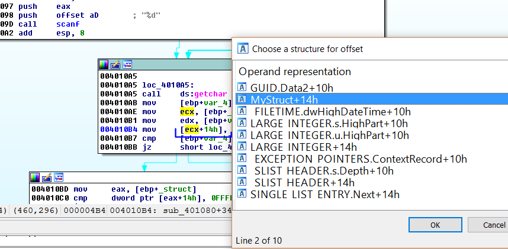
Vayamos al 0x14 de MyStruct y apretemos D hasta que sea un DWORD y pongámosle el nombre c .
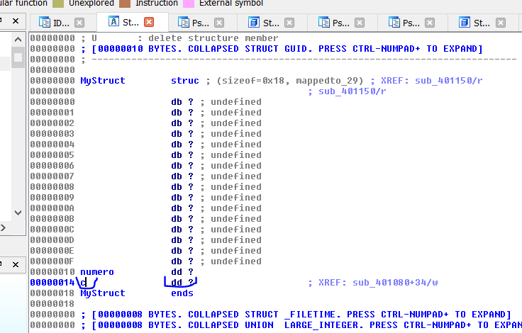
Allí apretamos T y ya queda.
Por último renombrare la función a enter.
Vemos que las tres primeras funciones las llama pasándole pepe y las tres siguientes le pasa juan.
Veamos la siguiente función.
También es llamada por ambas estructuras así que se puede al igual que en la anterior, apretando F5.
Ahí en la variable _struct hago click derecho CONVERT TO STRUCT *.
Ahora si es la dirección de una estructura MyStruct y al igual que antes veremos los campos, apretando T donde corresponde.
Allí vemos que compara el número que pasamos contra 0x10 y como la comparación es con signo, cualquier numero negativo podrá pasarlo como por ejemplo 0xffffffff que es -1 el cual es menor que 0x10.
Luego utiliza como size del gets_s el número que le pasamos, y el otro argumento, debe ser un buffer que se encuentra al inicio de la estructura pues usa la dirección de inicio de la misma.
Voy a MyStruct y en 0x0 apreto D una vez para que se cree un campo de un solo byte.
Y allí hago click derecho array.
El largo del buffer será 16 lo acepto.
Y lo renombro a Buffer
Allí quedo de largo 16 decimal.
Sigamos reverseando.
La cuestión es que con gets_s el buffer podrá ser overflodeado, ya que el chequeo deja pasar valores negativos que cuando se usan como size, se tomarán como valores unsigned, y serán grandes,
Si por ejemplo pasamos 0xffffffff en la comparación será -1 porque se toma signed y será menor que 0x10, pero al usarlo cómo size será el valor positivo 0xffffffff lo cual permite que pasemos la cantidad de caracteres que queremos en el gets_s al buffer y lo overflodeemos.
Así que podríamos renombrar la función como check o get lo que queramos que sea representativo de lo que hace la función, le pondremos check para que coincida.
Me queda la tercera función el argumento es el mismo así que repito el procedimiento, apreto F5 y cambio el tipo de argumento.
Sigo trabajando.
Vemos que hay un campo más ya que está tratando de comparar el [EAX+0x18], lo cual no tenemos definido pues el último campo nuestro de MyStruct es 0x14 lo agregaremos.
Nos ponemos en la palabra ends y apretamos D hasta que se crea un nuevo campo DD DWORD.
Lo renombro a cookie.
Vuelvo a la función y apreto T.
Vemos que hay otro campo más este es de un solo byte.
Así que volvemos a MyStruct y en ends apretamos D una vez y nos quedará un campo de un byte.
Lo renombre a flag para que coincida.
Volviendo a la función.
Sí cookie es igual a 0x99989796 luego pondrá flag de esa estructura a 1.
Si por algún cambio que no se propagó bien se rompen las variables del main y no hicimos snapshot como me pasó a mí.
Voy al inicio de la función rota, y apreto U
Acepto y quedara asi
Luego en el mismo inicio apreto C.
Y luego click derecho CREATE FUNCTION.
Ahora si quedo bien.
Viendo la representación del stack.
Vemos que después de cada estructura quedan tres bytes vacíos porque el último campo era uno de un solo byte y no hay más nada.
Solo quedaron mal los nombres de las estructuras, pero los cambiare como en el código fuente a pepe y juan.
Vemos que con juan hará lo mismo en enter y check que hizo con pepe, pero tiene una tercera función diferente, veamos que hace.
Al apretar T en los campos, vemos que es similar a la función “desicion”, solo que la constante con que compara la cookie de juan es diferente en este caso 0x33343536.
O sea que la cookie de pepe debe valer 0x99989796 y la de juan debe valer 0x33343536 con eso ambos flags de cada estructura estarán a 1.
Vemos que para que llegue al chico bueno ambos flags deben ser 1.
Este ejercicio tiene muchas soluciones porque como la estructura juan está más arriba en el stack.
Al hacer su gets_s podríamos pisar todos los flags para que queden a 1 y de esa forma, con un solo overflow, poder pasar los chequeos, también se puede hacer en forma individual, pisando en cada gets_s el flag y no es necesario pisar la cookie con el valor correcto, porque pisamos directamente el flag sin esperar que compare la cookie para que cambie el mismo.
Para pisar el flag tengo 16 bytes decimal, más 3 dwords o sea 12,
seria
16 + 12=28 bytes.
Seria
fruta= 28* “A” + “\x01”
Por supuesto a cada una de las estructuras hay que pasarle el -1 o el valor negativo que pase el check contra 0x10, y luego la fruta.
Si debugeamos un poco, vemos el -1 que entra en el campo número de pepe.
Pasa el chequeo y llega al gets_s y allí lee la fruta.
Allí veo la dirección de pepe en mi máquina, luego de pasar por el gets_s si voy allí.
Allí veo la fruta que le envíe, si quiero convertir en estructura.
Apreto ALT mas Q
Elijo MyStruct.
Veo los campos y que flag está ya pisado a 1 por el overflow, sin pasar por las otras funciones, sigo traceando.
Vemos que compara cookie contra 0x99989796 y como no es igual no modifica el flag pero el mismo ya está a 1, así que no me importa.
Se repetirá el mismo proceso y llegamos a desicion2.
Entro traceando con F7.
EAX tiene el inicio de la estructura Juan veámosla.
Allí también hago ALT mas Q para cambiarlo a estructura y elijo MyStruct.
Lo mismo que antes el flag estará a 1, la comparación con la cookie no será igual pero continuo pues el flag ya está bien.
pepe.flag vale 1 está bien sigo.
juan.flag también esta correcto, así que llego al cartel de chico bueno.
Y listo ya está solucionado.
Nos vemos en la parte 28
Ricardo Narvaja